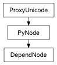

pymel.core.nodetypes.DependNode¶

- class DependNode(*args, **kwargs)¶
- MAttrClass = Enum( EnumValue('MAttrClass', 1, 'localDynamicAttr'), EnumValue('MAttrClass', 2, 'normalAttr'), EnumValue('MAttrClass', 3, 'extensionAttr'), EnumValue('MAttrClass', 4, 'invalidAttr'))¶
- MdgTimerMetric = Enum( EnumValue('MdgTimerMetric', 0, 'metric_callback'), EnumValue('MdgTimerMetric', 1, 'metric_compute'), EnumValue('MdgTimerMetric', 2, 'metric_dirty'), EnumValue('MdgTimerMetric', 3, 'metric_draw'), EnumValue('MdgTimerMetric', 4, 'metric_fetch'), EnumValue('MdgTimerMetric', 5, 'metric_callbackViaAPI'), EnumValue('MdgTimerMetric', 6, 'metric_callbackNotViaAPI'), EnumValue('MdgTimerMetric', 7, 'metric_computeDuringCallback'), EnumValue('MdgTimerMetric', 8, 'metric_computeNotDuringCallback'), EnumValue('MdgTimerMetric', 9, 'metrics'))¶
- MdgTimerState = Enum( EnumValue('MdgTimerState', 0, 'off'), EnumValue('MdgTimerState', 1, 'on'), EnumValue('MdgTimerState', 2, 'uninitialized'), EnumValue('MdgTimerState', 3, 'invalidState'))¶
- MdgTimerType = Enum( EnumValue('MdgTimerType', 0, 'type_self'), EnumValue('MdgTimerType', 1, 'type_inclusive'), EnumValue('MdgTimerType', 2, 'type_count'), EnumValue('MdgTimerType', 3, 'types'))¶
- addAttr(attr, **kwargs)¶
This command is used to add a dynamic attribute to a node or nodes. Either the longName or the shortName or both must be specified. If neither a dataType nor an attributeType is specified, a double attribute will be added. The dataType flag can be specified more than once indicating that any of the supplied types will be accepted (logical-or). To add a non- double attribute the following criteria can be used to determine whether the dataType or the attributeType flag is appropriate. Some types, such as double3can use either. In these cases the -dtflag should be used when you only wish to access the data as an atomic entity (eg. you never want to access the three individual values that make up a double3). In general it is best to use the -atin these cases for maximum flexibility. In most cases the -dtversion will not display in the attribute editor as it is an atomic type and you are not allowed to change individual parts of it. All attributes flagged as (compound)below or the compound attribute itself are not actually added to the node until all of the children are defined (using the -pflag to set their parent to the compound being created). See the EXAMPLES section for more details. Type of attribute Flag and argument to use boolean -at bool 32 bit integer -at long 16 bit integer -at short 8 bit integer -at byte char -at char enum -at enum (specify the enum names using the enumName flag) float -at float(use quotes since float is a mel keyword) double -at double angle value -at doubleAngle linear value -at doubleLinear string -dt string(use quotes since string is a mel keyword) array of strings -dt stringArray compound -at compound message (no data) -at message time -at time 4x4 double matrix -dt matrix(use quotes since matrix is a mel keyword) 4x4 float matrix -at fltMatrix reflectance -dt reflectanceRGBreflectance (compound) -at reflectance spectrum -dt spectrumRGB spectrum (compound) -at spectrum 2 floats -dt float2 2 floats (compound) -at float2 3 floats -dt float3 3 floats (compound) -at float3 2 doubles -dt double2 2 doubles (compound) -at double2 3 doubles -dt double3 3 doubles (compound) -at double3 2 32-bit integers -dt long2 2 32-bit integers (compound) -at long2 3 32-bit integers -dt long3 3 32-bit integers (compound) -at long3 2 16-bit integers -dt short2 2 16-bit integers (compound) -at short2 3 16-bit integers -dt short3 3 16-bit integers (compound) -at short3 array of doubles -dt doubleArray array of floats -dt floatArray array of 32-bit ints -dt Int32Array array of vectors -dt vectorArray nurbs curve -dt nurbsCurve nurbs surface -dt nurbsSurface polygonal mesh -dt mesh lattice -dt lattice array of double 4D points -dt pointArray In query mode, return type is based on queried flag.
Flags:
Long Name / Short Name Argument Types Properties attributeType / at unicode 

Specifies the attribute type, see above table for more details. Note that the attribute types float, matrixand stringare also MEL keywords and must be enclosed in quotes.
binaryTag / bt unicode
- This flag is obsolete and does not do anything any more
cachedInternally / ci bool
Whether or not attribute data is cached internally in the node. This flag defaults to true for writable attributes and false for non-writable attributes. A warning will be issued if users attempt to force a writable attribute to be uncached as this will make it impossible to set keyframes.
category / ct unicode

An attribute category is a string associated with the attribute to identify it. (e.g. the name of a plugin that created the attribute, version information, etc.) Any attribute can be associated with an arbitrary number of categories however categories can not be removed once associated.
dataType / dt unicode
- Specifies the data type. See setAttrfor more information on data type names.
defaultValue / dv float
- Specifies the default value for the attribute (can only be used for numeric attributes).
disconnectBehaviour / dcb int
- defines the Disconnect Behaviour 2 Nothing, 1 Reset, 0 Delete
enumName / en unicode
Flag used to specify the ui names corresponding to the enum values. The specified string should contain a colon-separated list of the names, with optional values. If values are not specified, they will treated as sequential integers starting with 0. For example: -enumName A:B:Cwould produce options: A,B,C with values of 0,1,2; -enumName zero:one:two:thousand=1000would produce four options with values 0,1,2,1000; and -enumName solo=1:triplet=3:quintet=5would produce three options with values 1,3,5. (Note that there is a current limitation of the Channel Box that will sometimes incorrectly display an enumerated attribute’s pull-down menu. Extra menu items can appear that represent the numbers inbetween non-sequential option values. To avoid this limitation, specify sequential values for the options of any enumerated attributes that will appear in the Channel Box. For example: solo=1:triplet=2:quintet=3.)
exists / ex bool
Returns true if the attribute queried is a user-added, dynamic attribute; false if not. Flag can have multiple arguments, passed either as a tuple or a list.
fromPlugin / fp bool
Was the attribute originally created by a plugin? Normally set automatically when the API call is made - only added here to support storing it in a file independently from the creating plugin.
hasMaxValue / hxv bool
- Flag indicating whether an attribute has a maximum value. (can only be used for numeric attributes).
hasMinValue / hnv bool
- Flag indicating whether an attribute has a minimum value. (can only be used for numeric attributes).
hasSoftMaxValue / hsx bool
- Flag indicating whether a numeric attribute has a soft maximum.
hasSoftMinValue / hsn bool
- Flag indicating whether a numeric attribute has a soft minimum.
hidden / h bool
- Will this attribute be hidden from the UI?
indexMatters / im bool
- Sets whether an index must be used when connecting to this multi-attribute. Setting indexMatters to false forces the attribute to non-readable.
internalSet / internalSet bool
- Whether or not the internal cached value is set when this attribute value is changed. This is an internal flag used for updating UI elements.
keyable / k bool
- Is the attribute keyable by default?
longName / ln unicode
- Sets the long name of the attribute.
maxValue / max float
- Specifies the maximum value for the attribute (can only be used for numeric attributes).
minValue / min float
- Specifies the minimum value for the attribute (can only be used for numeric attributes).
multi / m bool
- Makes the new attribute a multi-attribute.
niceName / nn unicode
Sets the nice name of the attribute for display in the UI. Setting the attribute’s nice name to a non-empty string overrides the default behaviour of looking up the nice name from Maya’s string catalog. (Use the MEL commands attributeNiceNameand attributeQuery -niceNameto lookup an attribute’s nice name in the catalog.)
numberOfChildren / nc int
- How many children will the new attribute have?
parent / p unicode
- Attribute that is to be the new attribute’s parent.
readable / r bool
- Can outgoing connections be made from this attribute?
shortName / sn unicode
- Sets the short name of the attribute.
softMaxValue / smx float
- Soft maximum, valid for numeric attributes only. Specifies the upper default limit used in sliders for this attribute.
softMinValue / smn float
- Soft minimum, valid for numeric attributes only. Specifies the upper default limit used in sliders for this attribute.
storable / s bool
- Can the attribute be stored out to a file?
usedAsColor / uac bool
Is the attribute to be used as a color definition? Must have 3 DOUBLE or 3 FLOAT children to use this flag. The attribute type -atshould be double3or float3as appropriate. It can also be used to less effect with data types -dtas double3or float3as well but some parts of the code do not support this alternative. The special attribute types/data spectrumand reflectancealso support the color flag and on them it is set by default.
usedAsFilename / uaf bool
- Is the attribute to be treated as a filename definition? This flag is only supported on attributes with data type -dtof string.
writable / w bool
- Can incoming connections be made to this attribute?
Derived from mel command maya.cmds.addAttr
Example:
import pymel.core as pm pm.sphere( name='earth' ) # Result: [nt.Transform(u'earth'), nt.MakeNurbSphere(u'makeNurbSphere1')] # # Add an attribute named ms/mass with a default value of 1 and a # minimum value of 0.001 and a maximum of 10000. # pm.addAttr( shortName='ms', longName='mass', defaultValue=1.0, minValue=0.001, maxValue=10000 ) # Add a multi attribute named ff/forcefield of type double3. # pm.addAttr( shortName='ff', longName='forcefield', dataType='double3', multi=True ) # Add a compound attribute named sampson with children homeboy, midge, # damien, elizabeth, and sweetpea of varying types # pm.addAttr( longName='sampson', numberOfChildren=5, attributeType='compound' ) pm.addAttr( longName='homeboy', attributeType='matrix', parent='sampson' ) pm.addAttr( longName='midge', attributeType='message', parent='sampson' ) pm.addAttr( longName='damien', attributeType='double', parent='sampson' ) pm.addAttr( longName='elizabeth', attributeType='double', parent='sampson' ) pm.addAttr( longName='sweetpea', attributeType='double', parent='sampson' ) # To add an attribute that is to be interpreted as a color the # following attribute group must be used. # # Note that the word "float" must be in quotations since it is a # MEL keyword. # pm.addAttr( longName='rainbow', usedAsColor=True, attributeType='float3' ) pm.addAttr( longName='redBow', attributeType='float', parent='rainbow' ) pm.addAttr( longName='greenBow', attributeType='float', parent='rainbow' ) pm.addAttr( longName='blueBow', attributeType='float', parent='rainbow' ) # Other legal attribute types that can be interpreted as colors need # not specify the "-usedAsColor" flag as it will be assumed. These # include "-attributeType spectrum", "-attributeType reflectance", # "-dataType spectrumRGB", and "-dataType reflectanceRGB". # pm.addAttr( longName='implColor', dataType='spectrumRGB' ) pm.addAttr( '.implColor', query=True, usedAsColor=True ) # Result: True # # Add a double3 attribute named sanders with children bess, les and wes # pm.addAttr( longName='sanders', attributeType='double3' ) pm.addAttr( longName='bess', attributeType='double', parent='sanders' ) pm.addAttr( longName='les', attributeType='double', parent='sanders' ) pm.addAttr( longName='wes', attributeType='double', parent='sanders' )
- attr(attr)¶
access to attribute plug of a node. returns an instance of the Attribute class for the given attribute name.
Return type: Attribute
- static attrDefaults(*args, **kwargs)¶
Access to an attribute of a node. This does not require an instance:
>>> nt.Transform.attrDefaults('tx').isKeyable() True
but it can use one if needed ( for example, for dynamically created attributes )
>>> nt.Transform(u'persp').attrDefaults('tx').isKeyable()
Note: this is still experimental.
- attrInfo(**kwargs)¶
attributeInfo
Return type: Attribute list
- attributeCount()¶
Returns the number of attributes that this node has.
Return type: int Derived from api method maya.OpenMaya.MFnDependencyNode.attributeCount
- canBeWritten()¶
Returns the do not write state of the node. Will be true if the node can be written/exported to scene files.
Return type: bool Derived from api method maya.OpenMaya.MFnDependencyNode.canBeWritten
- cast(swapNode, **kwargs)¶
nodeCast
- classification()¶
getClassification
- connectAttr(attr, destination, **kwargs)¶
Connect the attributes of two dependency nodes and return the names of the two connected attributes. The connected attributes must be be of compatible types. First argument is the source attribute, second one is the destination. Refer to dependency node documentation.
Flags:
Long Name / Short Name Argument Types Properties force / f bool
- Forces the connection. If the destination is already connected, the old connection is broken and the new one made.
lock / l bool
If the argument is true, the destination attribute is locked after making the connection. If the argument is false, the connection is unlocked before making the connection.
nextAvailable / na bool
If the destination multi-attribute has set the indexMatters to be false with this flag specified, a connection is made to the next available index. No index need be specified.
referenceDest / rd unicode
This flag is used for file io only. The flag indicates that the connection replaces a connection made in a referenced file, and the flag argument indicates the original destination from the referenced file. This flag is used so that if the reference file is modified, maya can still attempt to make the appropriate connections in the main scene to the referenced object. Flag can have multiple arguments, passed either as a tuple or a list.
Derived from mel command maya.cmds.connectAttr
Example:
import pymel.core as pm pm.createNode( 'transform', n='firstGuy' ) # Result: nt.Transform(u'firstGuy') # pm.createNode( 'transform', n='secondGuy' ) # Result: nt.Transform(u'secondGuy') # # Connect the translation of two nodes together pm.connectAttr( 'firstGuy.t', 'secondGuy.translate' ) # Connect the rotation of one node to the override colour # of a second node. pm.connectAttr( 'firstGuy.rotate', 'secondGuy.overrideColor' )
- deleteAttr(attr, *args, **kwargs)¶
This command is used to delete a dynamic attribute from a node or nodes. The attribute can be specified by using either the long or short name. Only one dynamic attribute can be deleted at a time. Static attributes cannot be deleted. Children of a compound attribute cannot be deleted. You must delete the complete compound attribute. This command has no edit capabilities. The only query ability is to list all the dynamic attributes of a node. In query mode, return type is based on queried flag.
Flags:
Long Name / Short Name Argument Types Properties attribute / at unicode
- Specify either the long or short name of the attribute. Flag can have multiple arguments, passed either as a tuple or a list.
name / n unicode
- The name of the node.
Derived from mel command maya.cmds.deleteAttr
Example:
import pymel.core as pm pm.createNode( 'planet', n='mars' ) # Result: nt.Unknown(u'mars') # pm.addAttr( ln='martians', sn='mr', at='double' ) pm.addAttr( ln='greenMen', sn='gm', at='double' ) # Delete an attribute named mr/martians. pm.deleteAttr( 'mars', at='mr' ) # Alternative syntax pm.deleteAttr( 'mars.greenMen' ) # Query for the list of dynamic attributes. pm.deleteAttr( 'mars', q=True )
- deletePreset(presetName)¶
- destinations(**kwargs)¶
listConnections -source 0 -destination 1
Return type: PyNode list
- disconnectAttr(attr, destination=None, **kwargs)¶
Disconnects two connected attributes. First argument is the source attribute, second is the destination.
Flags:
Long Name / Short Name Argument Types Properties nextAvailable / na bool
If the destination multi-attribute has set the indexMatters to be false, the command will disconnect the first matching connection. No index needs to be specified. Flag can have multiple arguments, passed either as a tuple or a list.
Derived from mel command maya.cmds.disconnectAttr
Example:
import pymel.core as pm # Create a sphere and cone and connect their rotate attribute. # sph = pm.sphere() con = pm.cone() sphereR = '%s.r' % sph[0] coneR = '%s.r' % con[0] pm.connectAttr(sphereR, coneR) # Break the connection between the rotate attributes. # pm.disconnectAttr(sphereR, coneR)
- duplicate(*args, **kwargs)¶
This command duplicates the given objects. If no objects are given, then the selected list is duplicated. The smart transform feature allows duplicate to transform newly duplicated objects based on previous transformations between duplications. Example: Duplicate an object and move it to a new location. Duplicate it again with the smart duplicate flag. It should have moved once again the distance you had previously moved it. Note: changing the selected list between smart duplications will cause the transform information to be deleted The upstream Nodes option forces duplication of all upstream nodes leading upto the selected objects.. Upstream nodes are defined as all nodes feeding into selected nodes. During traversal of Dependency graph, if another dagObject is encountered, then that node and all it’s parent transforms are also duplicated. The inputConnections option forces the duplication of input connections to the nodes that are to be duplicated. This is very useful especially in cases where two nodes that are connected to each other are specified as nodes to be duplicated. In that situation, the connection between the nodes is also duplicated. See also:instance
- Modifications:
- new option: addShape
If addShape evaluates to True, then all arguments fed in must be shapes, and each will be duplicated and added under the existing parent transform, instead of duplicating the parent transform. The following arguments are incompatible with addShape, and will raise a ValueError if enabled along with addShape:
renameChildren (rc), instanceLeaf (ilf), parentOnly (po), smartTransform (st)
returns wrapped classes
returnRootsOnly is forced on for dag objects. This is because the duplicate command does not use full paths when returning the names of duplicated objects and will fail if the name is not unique.
Flags:
Long Name / Short Name Argument Types Properties inputConnections / ic bool
Input connections to the node to be duplicated, are also duplicated. This would result in a fan-out scenario as the nodes at the input side are not duplicated (unlike the -un option).
instanceLeaf / ilf bool
- instead of duplicating leaf DAG nodes, instance them.
name / n unicode
- name to give duplicated object(s)
parentOnly / po bool
- Duplicate only the specified DAG node and not any of its children. Flag can have multiple arguments, passed either as a tuple or a list.
renameChildren / rc bool
- rename the child nodes of the hierarchy, to make them unique.
returnRootsOnly / rr bool
return only the root nodes of the new hierarchy. When used with upstreamNodes flag, the upstream nodes will be omitted in the result. This flag controls only what is returned in the output string[], and it does NOT change the behaviour of the duplicate command.
smartTransform / st bool
- remembers last transformation and applies it to duplicated object(s)
upstreamNodes / un bool
- the upstream nodes leading upto the selected nodes (along with their connections) are also duplicated.
Derived from mel command maya.cmds.duplicate
Example:
import pymel.core as pm # Create a hierarchy of two spheres; pm.sphere( n='sphere1' ) # Result: [nt.Transform(u'sphere1'), nt.MakeNurbSphere(u'makeNurbSphere1')] # pm.move( 3, 0, 0 ) pm.sphere( n='sphere2' ) # Result: [nt.Transform(u'sphere2'), nt.MakeNurbSphere(u'makeNurbSphere2')] # pm.move( -3, 0, 0 ) pm.group( 'sphere1', 'sphere2', n='group1' ) # Result: nt.Transform(u'group1') # pm.circle( n='circle1' ) # Result: [nt.Transform(u'circle1'), nt.MakeNurbCircle(u'makeNurbCircle1')] # # Create a duplicate of the group pm.duplicate( 'group1' ) # Result: [nt.Transform(u'group2')] # pm.undo() pm.duplicate( 'group1', rr=True ) group2 # Create a row of 4 circles equally spaced using # the -smartTransform flag. pm.duplicate( 'circle1' ) pm.move( 3, 0, 0 ) pm.duplicate( st=True ) pm.duplicate( st=True ) # Duplicate a sphere along with its input connections. # If animCurves were feeding into original transforms of the # sphere, they will feed into the duplicated ones also. # If the sphere has history (in this case it does), # then the history is connected to the duplicate. Note that # changing the radius for the makeNurbSphere for the sphere1 # affects the duplicated sphere. # pm.duplicate( 'group1|sphere1', ic=True ) pm.move( 0, 0, 0 ) pm.setAttr( 'makeNurbSphere1.radius', 2 ) # Duplicate selected objects along with their upstream nodes # and connections. This will duplicate the history. pm.select( 'group1|sphere2' ) pm.duplicate( un=True )
- classmethod enableDGTiming(enable)¶
Globally enables or disables the DG node timing mechanism. There are two levels of control for DG node timing. dgTimerOn() and dgTimerOff() are used to determine which nodes are eligible for timer data collection and this method is used to globally enable or disable the DG node timing mechanism.
Parameters: - enable : bool
flag to turn timing on or off.
Derived from api method maya.OpenMaya.MFnDependencyNode.enableDGTiming
Undo is not currently supported for this method
- extractNum()¶
Return the trailing numbers of the node name. If no trailing numbers are found an error will be raised.
>>> from pymel.core import * >>> SCENE.lambert1.extractNum() u'1'
Return type: unicode
- getAttr(attr, *args, **kwargs)¶
This command returns the value of the named object’s attribute. UI units are used where applicable. Currently, the types of attributes that can be displayed are: numeric attributesstring attributesmatrix attributesnumeric compound attributes (whose children are all numeric)vector array attributesdouble array attributesint32 array attributespoint array attributesdata component list attributesOther data types cannot be retrieved. No result is returned if the attribute contains no data.
Flags:
Long Name / Short Name Argument Types Properties asString / asString bool
This flag is only valid for enum attributes. It allows you to get the attribute values as strings instead of integer values. Note that the returned string value is dependent on the UI language Maya is running in (about -uiLanguage).
caching / ca bool
- Returns whether the attribute is set to be cached internally
channelBox / cb bool
- Returns whether the attribute is set to show in the channelBox. Keyable attributes also show in the channel box.
expandEnvironmentVariables / x bool
- Expand any environment variable and (tilde characters on UNIX) found in string attributes which are returned.
keyable / k bool
- Returns the keyable state of the attribute.
lock / l bool
- Returns the lock state of the attribute.
multiIndices / mi bool
If the attribute is a multi, this will return a list containing all of the valid indices for the attribute. Flag can have multiple arguments, passed either as a tuple or a list.
settable / se bool
Returns 1 if this attribute is currently settable by setAttr, 0 otherwise. An attribute is settable if it’s not locked and either not connected, or has only keyframed animation.
silent / sl bool
When evaluating an attribute that is not a numeric or string value, suppress the error message saying that the data cannot be displayed. The attribute will be evaluated even though its data cannot be displayed. This flag does not suppress all error messages, only those that are benign.
size / s bool
- Returns the size of a multi-attribute array. Returns 1 if non-multi.
time / t time
- Evaluate the attribute at the given time instead of the current time.
type / typ bool
Returns the type of data currently in the attribute. Attributes of simple types such as strings and numerics always contain data, but attributes of complex types (arrays, meshes, etc) may contain no data if none has ever been assigned to them. When this happens the command will return with no result: not an empty string, but no result at all. Attempting to directly compare this non-result to another value or use it in an expression will result in an error, but you can assign it to a variable in which case the variable will be set to the default value for its type (e.g. an empty string for a string variable, zero for an integer variable, an empty array for an array variable). So to be safe when using this flag, always assign its result to a string variable, never try to use it directly.
Derived from mel command maya.cmds.getAttr
Example:
import pymel.core as pm pm.createNode( 'revolve', n='gravityWell' ) # Result: nt.Revolve(u'gravityWell') # pm.sphere( n='loxTank' ) # Result: [nt.Transform(u'loxTank'), nt.MakeNurbSphere(u'makeNurbSphere1')] # pm.cone( n='noseCone' ) # Result: [nt.Transform(u'noseCone'), nt.MakeNurbCone(u'makeNurbCone1')] # pm.cone( n='fin' ) # Result: [nt.Transform(u'fin'), nt.MakeNurbCone(u'makeNurbCone2')] # pm.pointConstraint( 'fin', 'noseCone', n='weld' ) # Result: nt.PointConstraint(u'weld') # angle = pm.getAttr('gravityWell.esw') type = pm.getAttr('loxTank.translate',type=True) lock = pm.getAttr('noseCone.translateX',lock=True) finZ = pm.getAttr('fin.translateZ',time=12) size = pm.getAttr('weld.target',size=True) size = pm.getAttr('weld.target',settable=True) matrix = pm.getAttr('loxTank.matrix') pm.createNode('file',n='file1') # Result: nt.File(u'file1') # pm.setAttr( 'file1.ftn', '$TMPDIR/smile.gif',type='string' ) s = pm.getAttr('file1.ftn') s = pm.getAttr('file1.ftn',x=True) # Get the list of all used indices on a multi attribute pm.getAttr('initialShadingGroup.dagSetMembers', multiIndices=True) # Result: [0, 1, 2] #
- getIcon()¶
Returns the custom icon filename associated with the node. The icon can be assigned using setIcon() .
Return type: unicode Derived from api method maya.OpenMaya.MFnDependencyNode.icon
- hasAttr(pyObj, attr, checkShape=True)¶
convenience function for determining if an object has an attribute. If checkShape is enabled, the shape node of a transform will also be checked for the attribute.
Return type: bool
- inputs(**kwargs)¶
listConnections -source 1 -destination 0
Return type: PyNode list
- isDefaultNode()¶
Returns true if the node is a default node.
Return type: bool Derived from api method maya.OpenMaya.MFnDependencyNode.isDefaultNode
- isFlagSet(flag)¶
Retrieves the current state of the specified flag for a node.
Parameters: - flag : int
number of the flag to retrieve.
Return type: bool
Derived from api method maya.OpenMaya.MFnDependencyNode.isFlagSet
- isLocked()¶
Indicates whether or not this node is locked. See the setLocked method for more information on what it means for a node to be locked.
Return type: bool Derived from api method maya.OpenMaya.MFnDependencyNode.isLocked
- isReadOnly()¶
Indicates whether or not this node came from a referenced file. If it did, the node will be marked as read-only in the scene and changes to the node’s attributes will be saved in the main scene file, not the referenced file from which the node came.
Return type: bool Derived from api method maya.OpenMaya.MFnDependencyNode.isFromReferencedFile
- isReferenced()¶
Indicates whether or not this node came from a referenced file. If it did, the node will be marked as read-only in the scene and changes to the node’s attributes will be saved in the main scene file, not the referenced file from which the node came.
Return type: bool Derived from api method maya.OpenMaya.MFnDependencyNode.isFromReferencedFile
Indicates whether or not this node is shared. This comes into play when you attempt to create a new node with the same name as an existing node. If the existing node is shared, then no new node will be created. If the existing node is not shared, then the new node will be created and given a different name.
Return type: bool Derived from api method maya.OpenMaya.MFnDependencyNode.isShared
- isTrackingEdits()¶
Returns whether or not edits on the given node are being tracked by the generalized edit system.
Return type: bool Derived from api method maya.OpenMaya.MFnDependencyNode.isTrackingEdits
- isUniquelyNamed()¶
Indicates whether or not this node’s name is unique within the scene.
Return type: bool Derived from api method maya.OpenMaya.MFnDependencyNode.hasUniqueName
- listAliases()¶
aliasAttr
- Modifications:
- returns an empty list when the result is None
- when queried, returns a list of (alias, Attribute) pairs.
Return type: (str, Attribute) list
- listAnimatable(*args, **kwargs)¶
This command list the animatable attributes of a node. Command flags allow filtering by the current manipulator, or node type.
- Modifications:
- returns an empty list when the result is None
- returns wrapped classes
Flags:
Long Name / Short Name Argument Types Properties active / act bool
- This flag is obsolete and no longer supported.
manip / m bool
Return only those attributes affected by the current manip. If there is no manip active and any other flags are specified, output is the same as if the -manipflag were not present.
manipHandle / mh bool
Return only those attributes affected by the current manip handle. If there is no manip handle active and any other flags are specified, output is the same as if the -manipHandleflag were not present.
shape / s bool
- This flag is obsolete and no longer supported. Flag can have multiple arguments, passed either as a tuple or a list.
type / typ bool
- Instead of returning attributes, Return the types of nodes that are currently animatable.
Derived from mel command maya.cmds.listAnimatable
Example:
import pymel.core as pm # List only the attrs driven by the current manip. # pm.listAnimatable( manip=True ) # Result: [] # # List only the attrs driven by the current manipulator handle. # pm.listAnimatable( manipHandle=True ) # Result: [] # # List only the types of nodes driven by the current manip. # pm.listAnimatable( manip=True, type=True ) # Result: [] # # List only the types of the active nodes. # pm.listAnimatable( type=True ) # Result: [] # # List attributes on active objects (and shapes below them), # or active attrs. # pm.listAnimatable() # Result: [] # # List types of active objects and types of any shapes below active # objects. # pm.listAnimatable( type=True ) # Result: [] #
- listAttr(**kwargs)¶
- Modifications:
- returns an empty list when the result is None
- added ‘alias’ keyword to list attributes that have aliases
- added ‘topLevel’ keyword to only return attributes that are not compound children; may not be used in combination with ‘descendants’
- added ‘descendants’ keyword to return all top-level attributes and all their descendants; note that the standard call may return some attributes that ‘descendants’ will not, if there are compound multi attributes with no existing indices; ie, the standard call might return “node.parentAttr[-1].childAttr”, but the ‘descendants’ version would only return childAttr if an index exists for parentAttr, ie “node.parentAttr[0].childAttr”; may not be used in combination with ‘topLevel’
Return type: Attribute list
- listPresets()¶
- loadPreset(presetName)¶
- lock(**kwargs)¶
lockNode -lock 1
- longName(**kwargs)¶
This produces the same results as DependNode.name and is included to simplify looping over lists of nodes that include both Dag and Depend nodes.
Return type: unicode
- name(update=True, stripNamespace=False, levels=0, long=False, stripUnderWorld=False)¶
The name of the node
unicode
- update : bool
- if True, will always query to underlying maya object to get it’s current name (and will therefore detect renames, re-parenting, etc); if False, it will use a cached value if available (which is slightly faster, but may be out of date)
- stripNamespace : bool
- if True, all nodes will have their namespaces stipped off of them (or a certain number of them, if levels is also used)
- levels : int
- if stripNamespace is True, then this number will determine the how many namespaces will be removed; if 0 (the default), then all leading namespaces will be removed; otherwise, this value gives the number of left-most levels to strip
- long : bool
- ignored; included simply to unify the interface between DependNode and DagNode, to make it easier to loop over lists of them
- stripUnderWorld : bool
- ignored; included simply to unify the interface between DependNode and DagNode, to make it easier to loop over lists of them
>>> import pymel.core as pm >>> pm.newFile(f=1) '' >>> node = pm.createNode('blinn')
>>> pm.namespace(add='foo') u'foo' >>> pm.namespace(add='bar', parent='foo') u'foo:bar' >>> pm.namespace(add='stuff', parent='foo:bar') u'foo:bar:stuff'
>>> node.rename(':foo:bar:stuff:blinn1') nt.Blinn(u'foo:bar:stuff:blinn1')
>>> node.name() u'foo:bar:stuff:blinn1' >>> node.name(stripNamespace=True) u'blinn1' >>> node.name(stripNamespace=True, levels=1) u'bar:stuff:blinn1' >>> node.name(stripNamespace=True, levels=2) u'stuff:blinn1'
- namespace(root=False)¶
Returns the namespace of the object with trailing colon included.
See DependNode.parentNamespace for a variant which does not include the trailing colon.
By default, if the object is in the root namespace, an empty string is returned; if root is True, ‘:’ is returned in this case.
unicode
- nextName()¶
Increment the trailing number of the object by 1
Raises an error if the name has no trailing number.
>>> from pymel.core import * >>> SCENE.lambert1.nextName() DependNodeName(u'lambert2')
Return type: unicode
- nextUniqueName()¶
Increment the trailing number of the object until a unique name is found
If there is no trailing number, appends ‘1’ to the name.
Return type: unicode
- node()¶
for compatibility with Attribute class
Return type: DependNode
- nodeName(**kwargs)¶
This produces the same results as DependNode.name and is included to simplify looping over lists of nodes that include both Dag and Depend nodes.
Return type: unicode
- outputs(**kwargs)¶
listConnections -source 0 -destination 1
Return type: PyNode list
- parentNamespace()¶
Returns the name of the namespace in which this node resides. Namespaces are often used when importing files to prevent name collisions.
Return type: unicode Derived from api method maya.OpenMaya.MFnDependencyNode.parentNamespace
- pluginName()¶
Returns the name of the plug-in this MFnDependendencyNode was defined in. The name returned is the name of the plug-in on disk, and may contain pathname separators (such as `/’) and drive letters (e.g. C:). If this object is not an MFnDependency node, then MS::kFailure is returned instead.
Return type: unicode Derived from api method maya.OpenMaya.MFnDependencyNode.pluginName
- prevName()¶
Decrement the trailing number of the object by 1
Raises an error if the name has no trailing number.
Return type: unicode
- referenceFile()¶
referenceQuery -file Return the reference file to which this object belongs. None if object is not referenced
Return type: FileReference
- classmethod registerVirtualSubClass(nameRequired=False)¶
Deprecated
- rename(name, **kwargs)¶
Return type: DependNode
- savePreset(presetName, custom=None, attributes=[])¶
- setAttr(attr, *args, **kwargs)¶
Sets the value of a dependency node attribute. No value for the the attribute is needed when the -l/-k/-s flags are used. The -type flag is only required when setting a non-numeric attribute. The following chart outlines the syntax of setAttr for non-numeric data types: TYPEbelow means any number of values of type TYPE, separated by a space[TYPE]means that the value of type TYPEis optionalA|Bmeans that either of Aor Bmay appearIn order to run its examples, first execute these commands to create the sample attribute types:sphere -n node; addAttr -ln short2Attr -at short2; addAttr -ln short2a -p short2Attr -at short; addAttr -ln short2b -p short2Attr -at short; addAttr -ln short3Attr -at short3; addAttr -ln short3a -p short3Attr -at short; addAttr -ln short3b -p short3Attr -at short; addAttr -ln short3c -p short3Attr -at short; addAttr -ln long2Attr -at long2; addAttr -ln long2a -p long2Attr -at long; addAttr -ln long2b -p long2Attr -at long; addAttr -ln long3Attr -at long3; addAttr -ln long3a -p long3Attr -at long; addAttr -ln long3b -p long3Attr -at long; addAttr -ln long3c -p long3Attr -at long; addAttr -ln float2Attr -at float2; addAttr -ln float2a -p float2Attr -at float; addAttr -ln float2b -p float2Attr -at float; addAttr -ln float3Attr -at float3; addAttr -ln float3a -p float3Attr -at float; addAttr -ln float3b -p float3Attr -at float; addAttr -ln float3c -p float3Attr -at float; addAttr -ln double2Attr -at double2; addAttr -ln double2a -p double2Attr -at double; addAttr -ln double2b -p double2Attr -at double; addAttr -ln double3Attr -at double3; addAttr -ln double3a -p double3Attr -at double; addAttr -ln double3b -p double3Attr -at double; addAttr -ln double3c -p double3Attr -at double; addAttr -ln int32ArrayAttr -dt Int32Array; addAttr -ln doubleArrayAttr -dt doubleArray; addAttr -ln pointArrayAttr -dt pointArray; addAttr -ln vectorArrayAttr -dt vectorArray; addAttr -ln stringArrayAttr -dt stringArray; addAttr -ln stringAttr -dt string; addAttr -ln matrixAttr -dt matrix; addAttr -ln sphereAttr -dt sphere; addAttr -ln coneAttr -dt cone; addAttr -ln meshAttr -dt mesh; addAttr -ln latticeAttr -dt lattice; addAttr -ln spectrumRGBAttr -dt spectrumRGB; addAttr -ln reflectanceRGBAttr -dt reflectanceRGB; addAttr -ln componentListAttr -dt componentList; addAttr -ln attrAliasAttr -dt attributeAlias; addAttr -ln curveAttr -dt nurbsCurve; addAttr -ln surfaceAttr -dt nurbsSurface; addAttr -ln trimFaceAttr -dt nurbsTrimface; addAttr -ln polyFaceAttr -dt polyFaces; -type short2Array of two short integersValue Syntaxshort shortValue Meaningvalue1 value2Mel ExamplesetAttr node.short2Attr -type short2 1 2;Python Examplecmds.setAttr(‘node.short2Attr’,1,2,type=’short2’)-type short3Array of three short integersValue Syntaxshort short shortValue Meaningvalue1 value2 value3Mel ExamplesetAttr node.short3Attr -type short3 1 2 3;Python Examplecmds.setAttr(‘node.short3Attr’,1,2,3,type=’short3’)-type long2Array of two long integersValue Syntaxlong longValue Meaningvalue1 value2Mel ExamplesetAttr node.long2Attr -type long2 1000000 2000000;Python Examplecmds.setAttr(‘node.long2Attr’,1000000,2000000,type=’long2’)-type long3Array of three long integersValue Syntaxlong long longValue Meaningvalue1 value2 value3Mel ExamplesetAttr node.long3Attr -type long3 1000000 2000000 3000000;Python Examplecmds.setAttr(‘node.long3Attr’,1000000,2000000,3000000,type=’long3’)-type Int32ArrayVariable length array of long integersValue SyntaxValue MeaningMel ExamplesetAttr node.int32ArrayAttr -type Int32Array 2 12 75;Python Examplecmds.setAttr(‘node.int32ArrayAttr’,[2,12,75],type=’Int32Array’)-type float2Array of two floatsValue Syntaxfloat floatValue Meaningvalue1 value2Mel ExamplesetAttr node.float2Attr -type float2 1.1 2.2;Python Examplecmds.setAttr(‘node.float2Attr’,1.1,2.2,type=’float2’)-type float3Array of three floatsValue Syntaxfloat float floatValue Meaningvalue1 value2 value3Mel ExamplesetAttr node.float3Attr -type float3 1.1 2.2 3.3;Python Examplecmds.setAttr(‘node.float3Attr’,1.1,2.2,3.3,type=’float3’)-type double2Array of two doublesValue Syntaxdouble doubleValue Meaningvalue1 value2Mel ExamplesetAttr node.double2Attr -type double2 1.1 2.2;Python Examplecmds.setAttr(‘node.double2Attr’,1.1,2.2,type=’double2’)-type double3Array of three doublesValue Syntaxdouble double doubleValue Meaningvalue1 value2 value3Mel ExamplesetAttr node.double3Attr -type double3 1.1 2.2 3.3;Python Examplecmds.setAttr(‘node.double3Attr’,1.1,2.2,3.3,type=’double3’)-type doubleArrayVariable length array of doublesValue SyntaxValue MeaningMel ExamplesetAttr node.doubleArrayAttr -type doubleArray 2 3.14159 2.782;Python Examplecmds.setAttr( node.doubleArrayAttr, (2, 3.14159, 2.782,), type=doubleArray)-type matrix4x4 matrix of doublesValue Syntaxdouble double double doubledouble double double doubledouble double double doubledouble double double doubleValue Meaningrow1col1 row1col2 row1col3 row1col4row2col1 row2col2 row2col3 row2col4row3col1 row3col2 row3col3 row3col4row4col1 row4col2 row4col3 row4col4Alternate Syntaxstring double double doubledouble double doubleintegerdouble double doubledouble double doubledouble double doubledouble double doubledouble double doubledouble double doubledouble double double doubledouble double double doubledouble double doublebooleanAlternate MeaningxformscaleX scaleY scaleZrotateX rotateY rotateZrotationOrder (0=XYZ, 1=YZX, 2=ZXY, 3=XZY, 4=YXZ, 5=ZYX)translateX translateY translateZshearXY shearXZ shearYZscalePivotX scalePivotY scalePivotZscaleTranslationX scaleTranslationY scaleTranslationZrotatePivotX rotatePivotY rotatePivotZrotateTranslationX rotateTranslationY rotateTranslationZrotateOrientW rotateOrientX rotateOrientY rotateOrientZjointOrientW jointOrientX jointOrientY jointOrientZinverseParentScaleX inverseParentScaleY inverseParentScaleZcompensateForParentScale Mel ExamplesetAttr node.matrixAttr -type matrix1 0 0 0 0 1 0 0 0 0 1 0 2 3 4 1;setAttr node.matrixAttr -type matrixxform1 1 1 0 0 0 0 2 3 4 0 0 00 0 0 0 0 0 0 0 0 0 0 1 1 0 0 1 0 1 0 1 1 1 0 false;Python Examplecmds.setAttr(‘node.matrixAttr’,(1,0,0,0,0,1,0,0,0,0,1,0,2,3,4,1),type=’matrix’)cmds.setAttr(‘node.ma trixAttr’,’xform’,(1,1,1),(0,0,0),0,(2,3,4),(0,0,0),(0,0,0),(0,0,0),(0,0,0),(0,1,1),(0,0,1,0),(1,0,1,0),(1,2,3),False,ty pe=matrix)-type pointArrayVariable length array of pointsValue SyntaxValue MeaningMel ExamplesetAttr node.pointArrayAttr -type pointArray 2 1 1 1 1 2 2 2 1;Python Examplecmds.setAttr(‘node.pointArrayAttr’,2,(1,1,1,1),(2,2,2,1),type=’pointArray’)-type vectorArrayVariable length array of vectorsValue SyntaxValue MeaningMel ExamplesetAttr node.vectorArrayAttr -type vectorArray 2 1 1 1 2 2 2;Python Examplecmds.setAttr(‘node.vectorArrayAttr’,2,(1,1,1),(2,2,2),type=’vectorArray’)-type stringCharacter stringValue SyntaxstringValue MeaningcharacterStringValueMel ExamplesetAttr node.stringAttr -type stringblarg;Python Examplecmds.setAttr(‘node.stringAttr’,blarg,type=string)-type stringArrayVariable length array of stringsValue SyntaxValue MeaningMel ExamplesetAttr node.stringArrayAttr -type stringArray 3 abc;Python Examplecmds.setAttr(‘node.stringArrayAttr’,3,a,b,c,type=’stringArray’)-type sphereSphere dataValue SyntaxdoubleValue MeaningsphereRadiusExamplesetAttr node.sphereAttr -type sphere 5.0;-type coneCone dataValue Syntaxdouble doubleValue MeaningconeAngle coneCapMel ExamplesetAttr node.coneAttr -type cone 45.0 5.0;Python Examplecmds.setAttr(‘node.coneAttr’,45.0,5.0,type=’cone’)-type reflectanceRGBReflectance dataValue Syntaxdouble double doubleValue MeaningredReflect greenReflect blueReflectMel ExamplesetAttr node.reflectanceRGBAttr -type reflectanceRGB 0.5 0.5 0.1;Python Examplecmds.setAttr(‘node.reflectanceRGBAttr’,0.5,0.5,0.1,type=’reflectanceRGB’)-type spectrumRGBSpectrum dataValue Syntaxdouble double doubleValue MeaningredSpectrum greenSpectrum blueSpectrumMel ExamplesetAttr node.spectrumRGBAttr -type spectrumRGB 0.5 0.5 0.1;Python Examplecmds.setAttr(‘node.spectrumRGBAttr’,0.5,0.5,0.1,type=’spectrumRGB’)-type componentListVariable length array of componentsValue SyntaxValue MeaningMel ExamplesetAttr node.componentListAttr -type componentList 3 cv[1] cv[12] cv[3];Python Examplecmds.setAttr(‘node.componentListAttr’,3,’cv[1]’,’cv[12]’,’cv[3]’,type=’componentList’)-type attributeAliasString alias dataValue Syntaxstring stringValue MeaningnewAlias currentNameMel ExamplesetAttr node.attrAliasAttr -type attributeAliasGoUp, translateY, GoLeft, translateX;Python Examplecmds.setAttr(‘node.attrAliasAttr’,(GoUp, translateY,GoLeft, translateX),type=’attributeAlias’)-type nurbsCurveNURBS curve dataValue SyntaxValue MeaningMel Example// degree is the degree of the curve(range 1-7)// spans is the number of spans // form is open (0), closed (1), periodic (2)// dimension is 2 or 3, depending on the dimension of the curve// isRational is true if the curve CVs contain a rational component // knotCount is the size of the knot list// knotValue is a single entry in the knot list// cvCount is the number of CVs in the curve// xCVValue,yCVValue,[zCVValue] [wCVValue] is a single CV.// zCVValue is only present when dimension is 3.// wCVValue is only present when isRational is true.//setAttr node.curveAttr -type nurbsCurve 3 1 0 no 36 0 0 0 1 1 14 -2 3 0 -2 1 0 -2 -1 0 -2 -3 0;-type nurbsSurfaceNURBS surface dataValue Syntaxint int int int bool Value MeaninguDegree vDegree uForm vForm isRationalTRIM|NOTRIMExample// uDegree is degree of the surface in U direction (range 1-7)// vDegree is degree of the surface in V direction (range 1-7)// uForm is open (0), closed (1), periodic (2) in U direction// vForm is open (0), closed (1), periodic (2) in V direction// isRational is true if the surface CVs contain a rational component// uKnotCount is the size of the U knot list// uKnotValue is a single entry in the U knot list// vKnotCount is the size of the V knot list// vKnotValue is a single entry in the V knot list// If TRIMis specified then additional trim information is expected// If NOTRIMis specified then the surface is not trimmed// cvCount is the number of CVs in the surface// xCVValue,yCVValue,zCVValue [wCVValue]is a single CV.// zCVValue is only present when dimension is 3.// wCVValue is only present when isRational is true//setAttr node.surfaceAttr -type nurbsSurface 3 3 0 0 no 6 0 0 0 1 1 16 0 0 0 1 1 116 -2 3 0 -2 1 0 -2 -1 0 -2 -3 0-1 3 0 -1 1 0 -1 -1 0 -1 -3 01 3 0 1 1 0 1 -1 0 1 -3 03 3 0 3 1 0 3 -1 0 3 -3 0;-type nurbsTrimfaceNURBS trim face dataValue SyntaxValue MeaningExample// flipNormal if true turns the surface inside out// boundaryCount: number of boundaries// boundaryType: // tedgeCountOnBoundary : number of edges in a boundary// splineCountOnEdge : number of splines in an edge in// edgeTolerance : tolerance used to build the 3d edge// isEdgeReversed : if true, the edge is backwards// geometricContinuity : if true, the edge is tangent continuous// splineCountOnPedge : number of splines in a 2d edge// isMonotone : if true, curvature is monotone// pedgeTolerance : tolerance for the 2d edge//-type polyFacePolygon face dataValue SyntaxfhmfmhmufcValue MeaningfhmfmhmufcExample// This data type (polyFace) is meant to be used in file I/O// after setAttrs have been written out for vertex position// arrays, edge connectivity arrays (with corresponding start// and end vertex descriptions), texture coordinate arrays and// color arrays. The reason is that this data type references// all of its data through ids created by the former types.//// fspecifies the ids of the edges making up a face -// negative value if the edge is reversed in the face// hspecifies the ids of the edges making up a hole -// negative value if the edge is reversed in the face// mfspecifies the ids of texture coordinates (uvs) for a face.// This data type is obsolete as of version 3.0. It is replaced by mu.// mhspecifies the ids of texture coordinates (uvs) for a hole// This data type is obsolete as of version 3.0. It is replaced by mu.// muThe first argument refers to the uv set. This is a zero- based// integer number. The second argument refers to the number of vertices (n)// on the face which have valid uv values. The last n values are the uv// ids of the texture coordinates (uvs) for the face. These indices// are what used to be represented by the mfand mhspecification.// There may be more than one muspecification, one for each unique uv set.// fcspecifies the color index values for a face//setAttr node.polyFaceAttr -type polyFaces f3 1 2 3 fc3 4 4 6;-type meshPolygonal meshValue SyntaxValue Meaningvvn[vtesmooth|hard]Example// vspecifies the vertices of the polygonal mesh// vnspecifies the normal of each vertex// vtis optional and specifies a U,V texture coordinate for each vertex// especifies the edge connectivity information between vertices//setAttr node.meshAttr -type mesh v3 0 0 0 0 1 0 0 0 1vn3 1 0 0 1 0 0 1 0 0vt3 0 0 0 1 1 0e3 0 1 hard1 2 hard2 0 hard;-type latticeLattice dataValue SyntaxValue MeaningsDivisionCount tDivisionCount uDivisionCountExample// sDivisionCount is the horizontal lattice division count// tDivisionCount is the vertical lattice division count// uDivisionCount is the depth lattice division count// pointCount is the total number of lattice points// pointX,pointY,pointZ is one lattice point. The list is// specified varying first in S, then in T, last in U so the// first two entries are (S=0,T=0,U=0) (s=1,T=0,U=0)//setAttr node.latticeAttr -type lattice 2 5 2 20-2 -2 -2 2 -2 -2 -2 -1 -2 2 -1 -2 -2 0 -22 0 -2 -2 1 -2 2 1 -2 -2 2 -2 2 2 -2-2 -2 2 2 -2 2 -2 -1 2 2 -1 2 -2 0 22 0 2 -2 1 2 2 1 2 -2 2 2 2 2 2;In query mode, return type is based on queried flag.
Flags:
Long Name / Short Name Argument Types Properties alteredValue / av bool
The value is only the current value, which may change in the next evalution (if the attribute has an incoming connection). This flag is only used during file I/O, so that attributes with incoming connections do not have their data overwritten during the first evaluation after a file is opened.
caching / ca bool
Sets the attribute’s internal caching on or off. Not all attributes can be defined as caching. Only those attributes that are not defined by default to be cached can be made caching. As well, multi attribute elements cannot be made caching. Caching also affects child attributes for compound attributes.
capacityHint / ch int
Used to provide a memory allocation hint to attributes where the -size flag cannot provide enough information. This flag is optional and is primarily intended to be used during file I/O. Only certain attributes make use of this flag, and the interpretation of the flag value varies per attribute. This flag is currently used by (node.attribute): mesh.face - hints the total number of elements in the face edge listsFlag can have multiple arguments, passed either as a tuple or a list.
channelBox / cb bool
- Sets the attribute’s display in the channelBox on or off. Keyable attributes are always display in the channelBox regardless of the channelBox settting.
clamp / c bool
- For numeric attributes, if the value is outside the range of the attribute, clamp it to the min or max instead of failing
keyable / k bool
- Sets the attribute’s keyable state on or off.
lock / l bool
- Sets the attribute’s lock state on or off.
size / s int
- Defines the size of a multi-attribute array. This is only a hint, used to help allocate memory as efficiently as possible.
type / typ unicode
- Identifies the type of data. If the -type flag is not present, a numeric type is assumed.
Derived from mel command maya.cmds.setAttr
Example:
import pymel.core as pm pm.sphere( n="sphere" ) # Result: [nt.Transform(u'sphere'), nt.MakeNurbSphere(u'makeNurbSphere1')] # # Set a simple numeric value pm.setAttr( 'sphere.translateX', 5 ) # Lock an attribute to prevent further modification pm.setAttr( 'sphere.translateX', lock=True ) # Make an attribute unkeyable pm.setAttr( 'sphere.translateZ', keyable=False ) # Set an entire list of multi-attribute values in one command pm.setAttr( 'sphereShape.weights[0:6]',1, 1, 2, 1, 1, 1, 2,size=7) # Set an attribute with a compound numeric type pm.setAttr('sphere.rotate', 0, 45, 90, type="double3") # Clamp the value of the attribute to the min/max # Useful floating point math leaves the value just # a little out of range - here the min is .01 pm.setAttr( 'anisotropic1.roughness', 0.0099978, clamp=True ) # Set a multi-attribute with a compound numeric type pm.setAttr( 'sphereShape.controlPoints[0:2]', 0, 0, 0, 1, 1, 1, 2, 2, 2,type="double3" )
- setDoNotWrite(flag)¶
Use this method to mark the “do not write” state of this node. If set, this node will not be saved when the Maya model is written out.
Parameters: - flag : bool
True if the node should not be saved.
Derived from api method maya.OpenMaya.MFnDependencyNode.setDoNotWrite
Undo is not currently supported for this method
- setDynamicAttr(attr, *args, **kwargs)¶
Sets the value of a dependency node attribute. No value for the the attribute is needed when the -l/-k/-s flags are used. The -type flag is only required when setting a non-numeric attribute. The following chart outlines the syntax of setAttr for non-numeric data types: TYPEbelow means any number of values of type TYPE, separated by a space[TYPE]means that the value of type TYPEis optionalA|Bmeans that either of Aor Bmay appearIn order to run its examples, first execute these commands to create the sample attribute types:sphere -n node; addAttr -ln short2Attr -at short2; addAttr -ln short2a -p short2Attr -at short; addAttr -ln short2b -p short2Attr -at short; addAttr -ln short3Attr -at short3; addAttr -ln short3a -p short3Attr -at short; addAttr -ln short3b -p short3Attr -at short; addAttr -ln short3c -p short3Attr -at short; addAttr -ln long2Attr -at long2; addAttr -ln long2a -p long2Attr -at long; addAttr -ln long2b -p long2Attr -at long; addAttr -ln long3Attr -at long3; addAttr -ln long3a -p long3Attr -at long; addAttr -ln long3b -p long3Attr -at long; addAttr -ln long3c -p long3Attr -at long; addAttr -ln float2Attr -at float2; addAttr -ln float2a -p float2Attr -at float; addAttr -ln float2b -p float2Attr -at float; addAttr -ln float3Attr -at float3; addAttr -ln float3a -p float3Attr -at float; addAttr -ln float3b -p float3Attr -at float; addAttr -ln float3c -p float3Attr -at float; addAttr -ln double2Attr -at double2; addAttr -ln double2a -p double2Attr -at double; addAttr -ln double2b -p double2Attr -at double; addAttr -ln double3Attr -at double3; addAttr -ln double3a -p double3Attr -at double; addAttr -ln double3b -p double3Attr -at double; addAttr -ln double3c -p double3Attr -at double; addAttr -ln int32ArrayAttr -dt Int32Array; addAttr -ln doubleArrayAttr -dt doubleArray; addAttr -ln pointArrayAttr -dt pointArray; addAttr -ln vectorArrayAttr -dt vectorArray; addAttr -ln stringArrayAttr -dt stringArray; addAttr -ln stringAttr -dt string; addAttr -ln matrixAttr -dt matrix; addAttr -ln sphereAttr -dt sphere; addAttr -ln coneAttr -dt cone; addAttr -ln meshAttr -dt mesh; addAttr -ln latticeAttr -dt lattice; addAttr -ln spectrumRGBAttr -dt spectrumRGB; addAttr -ln reflectanceRGBAttr -dt reflectanceRGB; addAttr -ln componentListAttr -dt componentList; addAttr -ln attrAliasAttr -dt attributeAlias; addAttr -ln curveAttr -dt nurbsCurve; addAttr -ln surfaceAttr -dt nurbsSurface; addAttr -ln trimFaceAttr -dt nurbsTrimface; addAttr -ln polyFaceAttr -dt polyFaces; -type short2Array of two short integersValue Syntaxshort shortValue Meaningvalue1 value2Mel ExamplesetAttr node.short2Attr -type short2 1 2;Python Examplecmds.setAttr(‘node.short2Attr’,1,2,type=’short2’)-type short3Array of three short integersValue Syntaxshort short shortValue Meaningvalue1 value2 value3Mel ExamplesetAttr node.short3Attr -type short3 1 2 3;Python Examplecmds.setAttr(‘node.short3Attr’,1,2,3,type=’short3’)-type long2Array of two long integersValue Syntaxlong longValue Meaningvalue1 value2Mel ExamplesetAttr node.long2Attr -type long2 1000000 2000000;Python Examplecmds.setAttr(‘node.long2Attr’,1000000,2000000,type=’long2’)-type long3Array of three long integersValue Syntaxlong long longValue Meaningvalue1 value2 value3Mel ExamplesetAttr node.long3Attr -type long3 1000000 2000000 3000000;Python Examplecmds.setAttr(‘node.long3Attr’,1000000,2000000,3000000,type=’long3’)-type Int32ArrayVariable length array of long integersValue SyntaxValue MeaningMel ExamplesetAttr node.int32ArrayAttr -type Int32Array 2 12 75;Python Examplecmds.setAttr(‘node.int32ArrayAttr’,[2,12,75],type=’Int32Array’)-type float2Array of two floatsValue Syntaxfloat floatValue Meaningvalue1 value2Mel ExamplesetAttr node.float2Attr -type float2 1.1 2.2;Python Examplecmds.setAttr(‘node.float2Attr’,1.1,2.2,type=’float2’)-type float3Array of three floatsValue Syntaxfloat float floatValue Meaningvalue1 value2 value3Mel ExamplesetAttr node.float3Attr -type float3 1.1 2.2 3.3;Python Examplecmds.setAttr(‘node.float3Attr’,1.1,2.2,3.3,type=’float3’)-type double2Array of two doublesValue Syntaxdouble doubleValue Meaningvalue1 value2Mel ExamplesetAttr node.double2Attr -type double2 1.1 2.2;Python Examplecmds.setAttr(‘node.double2Attr’,1.1,2.2,type=’double2’)-type double3Array of three doublesValue Syntaxdouble double doubleValue Meaningvalue1 value2 value3Mel ExamplesetAttr node.double3Attr -type double3 1.1 2.2 3.3;Python Examplecmds.setAttr(‘node.double3Attr’,1.1,2.2,3.3,type=’double3’)-type doubleArrayVariable length array of doublesValue SyntaxValue MeaningMel ExamplesetAttr node.doubleArrayAttr -type doubleArray 2 3.14159 2.782;Python Examplecmds.setAttr( node.doubleArrayAttr, (2, 3.14159, 2.782,), type=doubleArray)-type matrix4x4 matrix of doublesValue Syntaxdouble double double doubledouble double double doubledouble double double doubledouble double double doubleValue Meaningrow1col1 row1col2 row1col3 row1col4row2col1 row2col2 row2col3 row2col4row3col1 row3col2 row3col3 row3col4row4col1 row4col2 row4col3 row4col4Alternate Syntaxstring double double doubledouble double doubleintegerdouble double doubledouble double doubledouble double doubledouble double doubledouble double doubledouble double doubledouble double double doubledouble double double doubledouble double doublebooleanAlternate MeaningxformscaleX scaleY scaleZrotateX rotateY rotateZrotationOrder (0=XYZ, 1=YZX, 2=ZXY, 3=XZY, 4=YXZ, 5=ZYX)translateX translateY translateZshearXY shearXZ shearYZscalePivotX scalePivotY scalePivotZscaleTranslationX scaleTranslationY scaleTranslationZrotatePivotX rotatePivotY rotatePivotZrotateTranslationX rotateTranslationY rotateTranslationZrotateOrientW rotateOrientX rotateOrientY rotateOrientZjointOrientW jointOrientX jointOrientY jointOrientZinverseParentScaleX inverseParentScaleY inverseParentScaleZcompensateForParentScale Mel ExamplesetAttr node.matrixAttr -type matrix1 0 0 0 0 1 0 0 0 0 1 0 2 3 4 1;setAttr node.matrixAttr -type matrixxform1 1 1 0 0 0 0 2 3 4 0 0 00 0 0 0 0 0 0 0 0 0 0 1 1 0 0 1 0 1 0 1 1 1 0 false;Python Examplecmds.setAttr(‘node.matrixAttr’,(1,0,0,0,0,1,0,0,0,0,1,0,2,3,4,1),type=’matrix’)cmds.setAttr(‘node.ma trixAttr’,’xform’,(1,1,1),(0,0,0),0,(2,3,4),(0,0,0),(0,0,0),(0,0,0),(0,0,0),(0,1,1),(0,0,1,0),(1,0,1,0),(1,2,3),False,ty pe=matrix)-type pointArrayVariable length array of pointsValue SyntaxValue MeaningMel ExamplesetAttr node.pointArrayAttr -type pointArray 2 1 1 1 1 2 2 2 1;Python Examplecmds.setAttr(‘node.pointArrayAttr’,2,(1,1,1,1),(2,2,2,1),type=’pointArray’)-type vectorArrayVariable length array of vectorsValue SyntaxValue MeaningMel ExamplesetAttr node.vectorArrayAttr -type vectorArray 2 1 1 1 2 2 2;Python Examplecmds.setAttr(‘node.vectorArrayAttr’,2,(1,1,1),(2,2,2),type=’vectorArray’)-type stringCharacter stringValue SyntaxstringValue MeaningcharacterStringValueMel ExamplesetAttr node.stringAttr -type stringblarg;Python Examplecmds.setAttr(‘node.stringAttr’,blarg,type=string)-type stringArrayVariable length array of stringsValue SyntaxValue MeaningMel ExamplesetAttr node.stringArrayAttr -type stringArray 3 abc;Python Examplecmds.setAttr(‘node.stringArrayAttr’,3,a,b,c,type=’stringArray’)-type sphereSphere dataValue SyntaxdoubleValue MeaningsphereRadiusExamplesetAttr node.sphereAttr -type sphere 5.0;-type coneCone dataValue Syntaxdouble doubleValue MeaningconeAngle coneCapMel ExamplesetAttr node.coneAttr -type cone 45.0 5.0;Python Examplecmds.setAttr(‘node.coneAttr’,45.0,5.0,type=’cone’)-type reflectanceRGBReflectance dataValue Syntaxdouble double doubleValue MeaningredReflect greenReflect blueReflectMel ExamplesetAttr node.reflectanceRGBAttr -type reflectanceRGB 0.5 0.5 0.1;Python Examplecmds.setAttr(‘node.reflectanceRGBAttr’,0.5,0.5,0.1,type=’reflectanceRGB’)-type spectrumRGBSpectrum dataValue Syntaxdouble double doubleValue MeaningredSpectrum greenSpectrum blueSpectrumMel ExamplesetAttr node.spectrumRGBAttr -type spectrumRGB 0.5 0.5 0.1;Python Examplecmds.setAttr(‘node.spectrumRGBAttr’,0.5,0.5,0.1,type=’spectrumRGB’)-type componentListVariable length array of componentsValue SyntaxValue MeaningMel ExamplesetAttr node.componentListAttr -type componentList 3 cv[1] cv[12] cv[3];Python Examplecmds.setAttr(‘node.componentListAttr’,3,’cv[1]’,’cv[12]’,’cv[3]’,type=’componentList’)-type attributeAliasString alias dataValue Syntaxstring stringValue MeaningnewAlias currentNameMel ExamplesetAttr node.attrAliasAttr -type attributeAliasGoUp, translateY, GoLeft, translateX;Python Examplecmds.setAttr(‘node.attrAliasAttr’,(GoUp, translateY,GoLeft, translateX),type=’attributeAlias’)-type nurbsCurveNURBS curve dataValue SyntaxValue MeaningMel Example// degree is the degree of the curve(range 1-7)// spans is the number of spans // form is open (0), closed (1), periodic (2)// dimension is 2 or 3, depending on the dimension of the curve// isRational is true if the curve CVs contain a rational component // knotCount is the size of the knot list// knotValue is a single entry in the knot list// cvCount is the number of CVs in the curve// xCVValue,yCVValue,[zCVValue] [wCVValue] is a single CV.// zCVValue is only present when dimension is 3.// wCVValue is only present when isRational is true.//setAttr node.curveAttr -type nurbsCurve 3 1 0 no 36 0 0 0 1 1 14 -2 3 0 -2 1 0 -2 -1 0 -2 -3 0;-type nurbsSurfaceNURBS surface dataValue Syntaxint int int int bool Value MeaninguDegree vDegree uForm vForm isRationalTRIM|NOTRIMExample// uDegree is degree of the surface in U direction (range 1-7)// vDegree is degree of the surface in V direction (range 1-7)// uForm is open (0), closed (1), periodic (2) in U direction// vForm is open (0), closed (1), periodic (2) in V direction// isRational is true if the surface CVs contain a rational component// uKnotCount is the size of the U knot list// uKnotValue is a single entry in the U knot list// vKnotCount is the size of the V knot list// vKnotValue is a single entry in the V knot list// If TRIMis specified then additional trim information is expected// If NOTRIMis specified then the surface is not trimmed// cvCount is the number of CVs in the surface// xCVValue,yCVValue,zCVValue [wCVValue]is a single CV.// zCVValue is only present when dimension is 3.// wCVValue is only present when isRational is true//setAttr node.surfaceAttr -type nurbsSurface 3 3 0 0 no 6 0 0 0 1 1 16 0 0 0 1 1 116 -2 3 0 -2 1 0 -2 -1 0 -2 -3 0-1 3 0 -1 1 0 -1 -1 0 -1 -3 01 3 0 1 1 0 1 -1 0 1 -3 03 3 0 3 1 0 3 -1 0 3 -3 0;-type nurbsTrimfaceNURBS trim face dataValue SyntaxValue MeaningExample// flipNormal if true turns the surface inside out// boundaryCount: number of boundaries// boundaryType: // tedgeCountOnBoundary : number of edges in a boundary// splineCountOnEdge : number of splines in an edge in// edgeTolerance : tolerance used to build the 3d edge// isEdgeReversed : if true, the edge is backwards// geometricContinuity : if true, the edge is tangent continuous// splineCountOnPedge : number of splines in a 2d edge// isMonotone : if true, curvature is monotone// pedgeTolerance : tolerance for the 2d edge//-type polyFacePolygon face dataValue SyntaxfhmfmhmufcValue MeaningfhmfmhmufcExample// This data type (polyFace) is meant to be used in file I/O// after setAttrs have been written out for vertex position// arrays, edge connectivity arrays (with corresponding start// and end vertex descriptions), texture coordinate arrays and// color arrays. The reason is that this data type references// all of its data through ids created by the former types.//// fspecifies the ids of the edges making up a face -// negative value if the edge is reversed in the face// hspecifies the ids of the edges making up a hole -// negative value if the edge is reversed in the face// mfspecifies the ids of texture coordinates (uvs) for a face.// This data type is obsolete as of version 3.0. It is replaced by mu.// mhspecifies the ids of texture coordinates (uvs) for a hole// This data type is obsolete as of version 3.0. It is replaced by mu.// muThe first argument refers to the uv set. This is a zero- based// integer number. The second argument refers to the number of vertices (n)// on the face which have valid uv values. The last n values are the uv// ids of the texture coordinates (uvs) for the face. These indices// are what used to be represented by the mfand mhspecification.// There may be more than one muspecification, one for each unique uv set.// fcspecifies the color index values for a face//setAttr node.polyFaceAttr -type polyFaces f3 1 2 3 fc3 4 4 6;-type meshPolygonal meshValue SyntaxValue Meaningvvn[vtesmooth|hard]Example// vspecifies the vertices of the polygonal mesh// vnspecifies the normal of each vertex// vtis optional and specifies a U,V texture coordinate for each vertex// especifies the edge connectivity information between vertices//setAttr node.meshAttr -type mesh v3 0 0 0 0 1 0 0 0 1vn3 1 0 0 1 0 0 1 0 0vt3 0 0 0 1 1 0e3 0 1 hard1 2 hard2 0 hard;-type latticeLattice dataValue SyntaxValue MeaningsDivisionCount tDivisionCount uDivisionCountExample// sDivisionCount is the horizontal lattice division count// tDivisionCount is the vertical lattice division count// uDivisionCount is the depth lattice division count// pointCount is the total number of lattice points// pointX,pointY,pointZ is one lattice point. The list is// specified varying first in S, then in T, last in U so the// first two entries are (S=0,T=0,U=0) (s=1,T=0,U=0)//setAttr node.latticeAttr -type lattice 2 5 2 20-2 -2 -2 2 -2 -2 -2 -1 -2 2 -1 -2 -2 0 -22 0 -2 -2 1 -2 2 1 -2 -2 2 -2 2 2 -2-2 -2 2 2 -2 2 -2 -1 2 2 -1 2 -2 0 22 0 2 -2 1 2 2 1 2 -2 2 2 2 2 2;In query mode, return type is based on queried flag.
- same as DependNode.setAttr with the force flag set to True. This causes
- the attribute to be created based on the passed input value.
Flags:
Long Name / Short Name Argument Types Properties alteredValue / av bool
The value is only the current value, which may change in the next evalution (if the attribute has an incoming connection). This flag is only used during file I/O, so that attributes with incoming connections do not have their data overwritten during the first evaluation after a file is opened.
caching / ca bool
Sets the attribute’s internal caching on or off. Not all attributes can be defined as caching. Only those attributes that are not defined by default to be cached can be made caching. As well, multi attribute elements cannot be made caching. Caching also affects child attributes for compound attributes.
capacityHint / ch int
Used to provide a memory allocation hint to attributes where the -size flag cannot provide enough information. This flag is optional and is primarily intended to be used during file I/O. Only certain attributes make use of this flag, and the interpretation of the flag value varies per attribute. This flag is currently used by (node.attribute): mesh.face - hints the total number of elements in the face edge listsFlag can have multiple arguments, passed either as a tuple or a list.
channelBox / cb bool
- Sets the attribute’s display in the channelBox on or off. Keyable attributes are always display in the channelBox regardless of the channelBox settting.
clamp / c bool
- For numeric attributes, if the value is outside the range of the attribute, clamp it to the min or max instead of failing
keyable / k bool
- Sets the attribute’s keyable state on or off.
lock / l bool
- Sets the attribute’s lock state on or off.
size / s int
- Defines the size of a multi-attribute array. This is only a hint, used to help allocate memory as efficiently as possible.
type / typ unicode
- Identifies the type of data. If the -type flag is not present, a numeric type is assumed.
Derived from mel command maya.cmds.setAttr
Example:
import pymel.core as pm pm.sphere( n="sphere" ) # Result: [nt.Transform(u'sphere'), nt.MakeNurbSphere(u'makeNurbSphere1')] # # Set a simple numeric value pm.setAttr( 'sphere.translateX', 5 ) # Lock an attribute to prevent further modification pm.setAttr( 'sphere.translateX', lock=True ) # Make an attribute unkeyable pm.setAttr( 'sphere.translateZ', keyable=False ) # Set an entire list of multi-attribute values in one command pm.setAttr( 'sphereShape.weights[0:6]',1, 1, 2, 1, 1, 1, 2,size=7) # Set an attribute with a compound numeric type pm.setAttr('sphere.rotate', 0, 45, 90, type="double3") # Clamp the value of the attribute to the min/max # Useful floating point math leaves the value just # a little out of range - here the min is .01 pm.setAttr( 'anisotropic1.roughness', 0.0099978, clamp=True ) # Set a multi-attribute with a compound numeric type pm.setAttr( 'sphereShape.controlPoints[0:2]', 0, 0, 0, 1, 1, 1, 2, 2, 2,type="double3" )
- setIcon(filename)¶
Associates a custom icon with the node for display in the Maya UI. Currently the icon only shows up in Outliner panels (the DAG Outliner, Graph Editor and Dope Sheet).
Parameters: - filename : unicode
specifies the name of the image file defining the icon, or the empty string (i.e. “”) to revert to using Maya’s default. The filename must be a PNG file (.png) and may either be an absolute pathname or be relative to the XBMLANGPATH environment variable.
Derived from api method maya.OpenMaya.MFnDependencyNode.setIcon
- setLocked(lock)¶
Locks or unlocks this node.
Parameters: - lock : bool
If true then node will be locked.
Derived from api method maya.OpenMaya.MFnDependencyNode.setLocked
- shadingGroups()¶
list any shading groups in the future of this object - works for shading nodes, transforms, and shapes
Also see listSets(type=1) - which returns which ‘rendering sets’ the object is a member of (and ‘rendering sets’ seem to consist only of shading groups), whereas this method searches the object’s future for any nodes of type ‘shadingEngine’.
Return type: DependNode list
- shortName(**kwargs)¶
This produces the same results as DependNode.name and is included to simplify looping over lists of nodes that include both Dag and Depend nodes.
unicode
- sources(**kwargs)¶
listConnections -source 1 -destination 0
Return type: PyNode list
- stripNum()¶
Return the name of the node with trailing numbers stripped off. If no trailing numbers are found the name will be returned unchanged.
>>> from pymel.core import * >>> SCENE.lambert1.stripNum() u'lambert'
Return type: unicode
- type(node, **kwargs)¶
This command returns a string which identifies the given node’s type. When no flags are used, the unique type name is returned. This can be useful for seeing if two nodes are of the same type. When the apiflag is used, the MFn::Type of the node is returned. This can be useful for seeing if a plug-in node belongs to a given class. The apiflag cannot be used in conjunction with any other flags. When the derivedflag is used, the command returns a string array containing the names of all the currently known node types which derive from the node type of the given object. When the inheritedflag is used, the command returns a string array containing the names of all the base node types inherited by the the given node. If the isTypeNameflag is present then the argument provided to the command is taken to be the name of a node type rather than the name of a specific node. This makes it possible to query the hierarchy of node types without needing to have instances of each node type.
- Note: this will return the dg node type for an object, like maya.cmds.nodeType,
NOT the pymel PyNode class. For objects like components or attributes, nodeType will return the dg type of the node to which the PyNode is attached.
rtype: unicode
Flags:
Long Name / Short Name Argument Types Properties apiType / api bool
Return the MFn::Type value (as a string) corresponding to the given node. This is particularly useful when the given node is defined by a plug-in, since in this case, the MFn::Type value corresponds to the underlying proxy class. This flag cannot be used in combination with any of the other flags.
derived / d bool
- Return a string array containing the names of all the currently known node types which derive from the type of the specified node.
inherited / i bool
- Return a string array containing the names of all the base node types inherited by the specified node.
isTypeName / itn bool
If this flag is present, then the argument provided to the command is the name of a node type rather than the name of a specific node. Flag can have multiple arguments, passed either as a tuple or a list.
Derived from mel command maya.cmds.nodeType
Example:
import pymel.core as pm pm.sphere( n='balloon' ) # Result: [nt.Transform(u'balloon'), nt.MakeNurbSphere(u'makeNurbSphere1')] # # Find the type of node created by the sphere command pm.nodeType( 'balloon' ) # Result: u'transform' # # What is the API type of the balloon node? pm.nodeType( 'balloon', api=True ) # Result: u'kTransform' # # Which node types derive from camera? pm.nodeType( 'camera', derived=True, isTypeName=True ) # Result: [u'stereoRigCamera', u'camera'] #
- unlock(**kwargs)¶
lockNode -lock 0